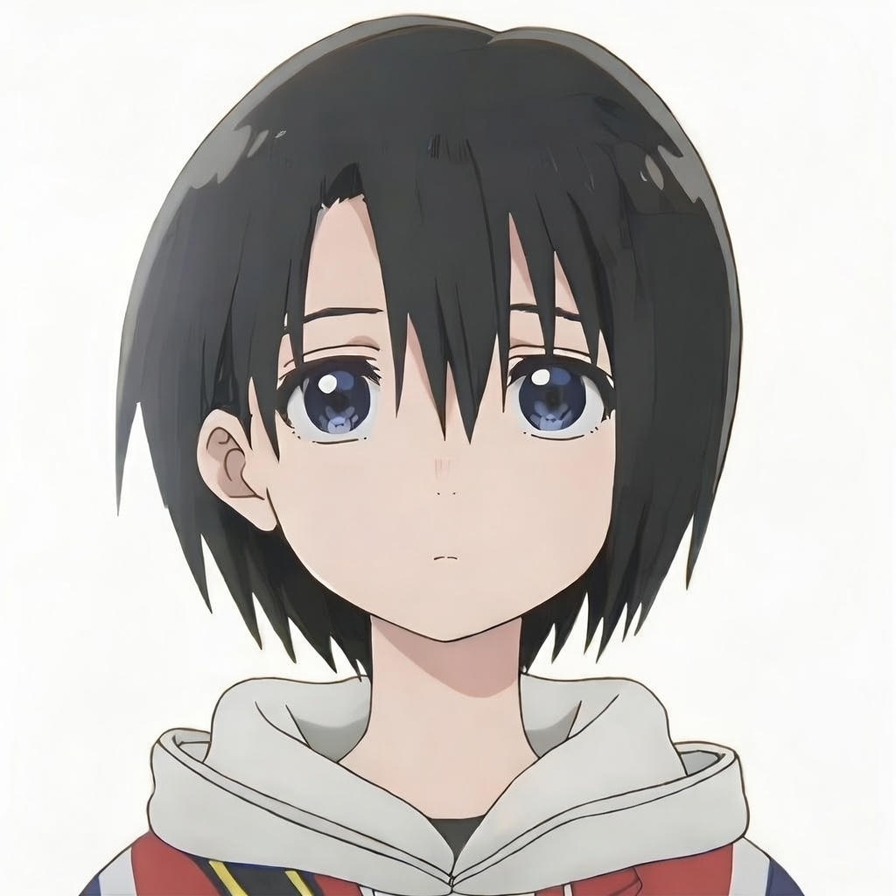

你好，我是 AY
自由设计师 & 内容创作者
追求极致美学与流动体验


关于我
来自 日本 东京 的自由设计师与内容创作者。
热爱将流动的美学融入数字与现实，探索极简、透明与光影的边界。日常沉浸于设计、摄影、城市漫步与深夜代码。目前专注于个人项目与品牌视觉叙事。
自由设计师 & 内容创作者
追求极致美学与流动体验
来自 日本 东京 的自由设计师与内容创作者。
热爱将流动的美学融入数字与现实，探索极简、透明与光影的边界。日常沉浸于设计、摄影、城市漫步与深夜代码。目前专注于个人项目与品牌视觉叙事。